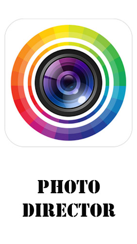

QUE ES IMAGENES CON INTELIGENCIA ARTIFICIAL
Alguna vez has visto esas fotografías perfectas en Instagram que parecen estar hechas por un profesional, pero en realidad fueron tomadas con un simple teléfono celular? La verdad es que la fotografía ha evolucionado enormemente con la incorporación de la inteligencia artificial. Hoy en día, gracias a la IA, cualquier persona puede tomar fotos con una calidad sorprendente sin saber nada sobre composición o ajustes de cámara.
APLICACIONES QUE PUEDES UTLILIZAR
Además, la empresa ha creado Sensei, una herramienta de inteligencia artificial que se utiliza en Photoshop y otras aplicaciones para analizar las imágenes y aplicar correcciones.Aplicacioines actual son esta dos aplicaciones REMENI,PHOTO DIRECTOR,son las usadas para editar una foto
COMO EDITAR UNA FOTO CON INTELIGENCIA ARTIFICIAL
PhotoDirector es un software de edición de fotografías de Cyberlink y es muy fácil e intuitivo de usar. Está diseñado con una interfaz sencilla e incluye una variedad de herramientas para ayudar incluso a los no expertos a lograr una edición de nivel profesional.
